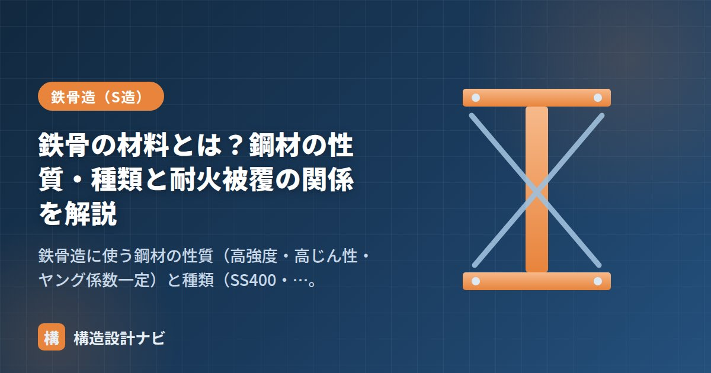

鉄骨の材料とは？鋼材の性質・種類と耐火被覆の関係を解説

鉄骨造の主役は鋼材（鉄）です。鋼材は強く粘り強い理想的な構造材料ですが、「熱に弱い」「錆びる」という弱点もあります。この記事では鋼材の性質・種類と、耐火被覆が必要になる理由を整理します。
鋼材の性質
- 高強度：コンクリートに比べてはるかに強く、小さい断面で大きな力を負担できる。
- 高じん性（粘り）：降伏後も大きく変形してから破断する。この粘りが地震時に建物が一気に壊れるのを防ぐ。
- ヤング係数が一定：E＝2.05×10⁵ N/mm²で、強度（材種）によらず一定。「強い鋼に変えても変形は減らない」点が重要。
- 均質で品質が安定：工業製品なのでばらつきが小さい。
鋼材の主な種類（記号の読み方）
| 記号 | 名称 | 特徴・用途 |
|---|---|---|
| SS400 | 一般構造用圧延鋼材 | 最も一般的。「400」は引張強さ400N/mm²以上を示す。 |
| SN400 / SN490 | 建築構造用圧延鋼材 | 建築専用に性能を保証した鋼材。溶接性・じん性に優れ、現在の主流。 |
| STKR | 一般構造用角形鋼管 | 柱に多用される角形鋼管（コラム）。 |
| 高張力鋼（ハイテン） | 高強度鋼 | 590N/mm²級など。部材を細くでき、超高層などで使用。 |
- 記号の末尾の数字は引張強さ（N/mm²）。SS400＝400以上、SN490＝490以上。
- 強度を上げてもヤング係数は同じなので、たわみ・座屈対策には断面形状（I）や座屈長さで対応する。
- 溶接を多用する建築では、溶接性とじん性が保証されたSN材が標準。
なぜ耐火被覆が必要か（材料の弱点）
鋼材は約500℃で強度がおよそ半分に低下します。火災時の温度（数百〜1000℃超）では、被覆のない鋼は急速に強度を失い、建物が崩壊する恐れがあります。そのため耐火建築物では、鋼材を熱から守る耐火被覆が必須です。
| 耐火被覆の方法 | 内容 |
|---|---|
| 吹付けロックウール | 繊維状の断熱材を吹き付ける。最も一般的で経済的。 |
| 耐火塗料（発泡型） | 火災時に発泡・断熱層をつくる塗料。鉄骨を見せたいデザインに有効。 |
| 耐火ボード巻き | けい酸カルシウム板などで囲う。 |
| 耐火鋼（FR鋼） | 高温でも強度低下が小さい鋼材。被覆を軽減できる。 |
RC造はコンクリートが鉄筋を覆って守るため耐火被覆が不要なのに対し、S造は鋼が露出するため被覆が要る——これがS造とRC造の大きな違いのひとつです（メリット・デメリット参照）。
もう一つの弱点：錆（防錆）
- 塗装：最も一般的。錆止め塗装＋仕上げ塗装。
- 溶融亜鉛めっき：鋼材を亜鉛で覆う。屋外・厳しい環境に有効。
- 耐候性鋼：表面に安定した錆の層をつくり内部の腐食を抑える鋼材。
鋼材の強度・ひずみの基礎は「応力度とひずみ度・ヤング係数」、用語は「鉄骨造の基礎用語」、全体像は「鉄骨造（S造）とは？」をどうぞ。
鋼材を発注する際、SS400で十分な部位にまでSN材を指定してコストを押し上げてしまう設計を見かけることがあります。溶接量やじん性が本当に必要な接合部かどうかを見極め、材料のグレードを使い分ける判断が、地味ですがコスト管理では効いてきます。
温度と鋼材強度の関係（図解）
「鋼は約500℃で強度が半減する」という性質を、グラフで確認しておきましょう。耐火被覆が必要な理由が直感的に理解できます。
建築基準法では、火災時に鋼材の温度が一定以下（一般に350℃程度）に保たれるよう、要求耐火時間に応じた被覆を求めています。要求時間は階数や部位によって異なり、最上階から数えて上層で1時間、下層になるほど長く2〜3時間となります。低層階ほど厚い被覆が必要なのは、火災時により長く建物を支え続ける必要があるためです。
耐火被覆の厚さの目安
被覆の厚さは、工法・要求時間・部材の形状（部材の断面積に対する加熱周長の比）によって決まります。代表的な吹付けロックウールの目安は次のとおりです。
| 要求耐火時間 | 吹付けロックウールの厚さ（目安） | 該当する階の例 |
|---|---|---|
| 1時間 | 約25〜35mm | 最上階から4階まで |
| 2時間 | 約45〜55mm | 最上階から5〜14階 |
| 3時間 | 約60〜70mm | 最上階から15階以深 |
※認定工法ごとに厚さが定められています。実際の設計では認定内容を確認してください。
耐火被覆は、意匠・コスト・納まりのすべてに影響します。吹付けは安価ですが表面が粗く、天井内など隠れる部位向けです。鉄骨を見せるデザインでは耐火塗料を使いますが、単価が数倍になることもあります。また被覆の厚み分だけ部材が太くなるため、納まりの検討にも影響します。意匠設計者と早い段階で工法を共有しておくことが、後戻りを防ぐポイントです。
よくある質問
Q1. SN材のB種とC種はどう使い分けますか？
板厚方向に引張力を受けるかどうかで判断します。柱・梁など一般的な主要構造部材にはB種を用います。C種は板厚方向の絞り値が保証されており、通しダイアフラムやベースプレートなど、板の厚み方向に力がかかる部位に使用します。この部位にB種を使うと、溶接部近傍で板が層状に割れるラメラテアが生じる可能性があります。
Q2. 耐火鋼（FR鋼）を使えば被覆は完全に不要になりますか？
条件によっては被覆を省略できますが、無条件ではありません。FR鋼は600℃でも常温規格の降伏点の2/3以上を保つよう設計された鋼材で、火災時の温度上昇が限定的な部位では無被覆で使える場合があります。ただし、要求耐火時間や部材が受ける熱の条件を個別に検証する必要があり、一般的な建築物では通常の鋼材に被覆を施すほうが経済的なことが多いです。
Q3. 鋼材の錆はどの程度まで許容されますか？
表面に浮いた程度の軽微な錆（浮き錆）は、施工前にケレン（除去）すれば問題ありません。問題になるのは、断面が減少するほど進行した錆です。一般に、板厚の減少が設計値に影響する場合は補修や部材交換が必要になります。また、高力ボルト摩擦接合面は、逆に適度な錆やブラスト処理による粗さが必要で、塗装してしまうと摩擦力が確保できません。部位ごとに求められる表面状態が異なる点に注意が必要です。
まとめ
- 鋼材は高強度・高じん性・ヤング係数一定で品質が安定。種類はSS400・SN材・角形鋼管・高張力鋼。
- 記号末尾の数字は引張強さ。建築では溶接性に優れるSN材が主流。
- 弱点は熱（約500℃で強度半減→耐火被覆が必要）と錆（防錆処理が必要）。